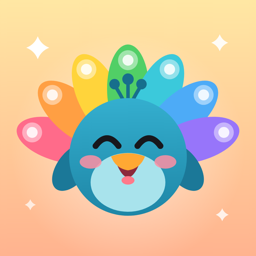

Plume Focus
A fun focus timer for ADHD brains.
Need help or found a bug?
Email galsomovic@gmail.com. In the app, Settings › Report a bug fills in your app and iOS versions for you.
Common questions
Why didn’t I get a “Session started?” notification?
Check that notifications for Plume are on in iOS Settings › Notifications, and that “Ask when it starts” is on for that event.
App blocking isn’t working.
Open Plume › Settings › Blocking, allow Screen Time access, and choose the apps to block. Apps are blocked only while a session is running.
My calendar events don’t show up.
Allow calendar access when Plume asks, or turn it on in iOS Settings › Apps › Plume. Plume shows every calendar on your iPhone, including iCloud, Google and Outlook accounts.
Does Plume need an account?
No. There is no sign-up and nothing to log in to.